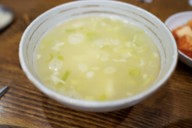

제가 소개할 가락동 경찰병원 맛집은
오향가입니다~!
이 가게의 메뉴부터 보여드릴게요!
그 중에서도 메인 메뉴인 오향가탕수육! 마파두부 그리고 족발을 보여드리고 싶어요
먼저 탕수육!
탕수육이 한 접시 가득 나왔습니다.
탕수육 중 사이즈 가격은 20,000원!
겉은 바삭바삭!! 젓가락으로 들고 컷-!
속은 촉촉한 겉바속촉 탕수육입니당
같이 나온 소스!!
소스에는 양배추, 양파, 당근 등 다양한 재료가 들어있어요~!
부먹을 하거나 찍먹을 할 수 있도록 따로 세팅이 되어서 나옵니다.
탕수육 소스에 찍어먹어요!!
다음은 마파두부밥!
오향가에서는 마파두부밥을 무조건 주문하셔야 한답니다.
가격은 9,000원! 아주 저렴하죠?
숟가락에 얹어서 한 컷-!
마파두부에 중국 향신료가 많이 들어가 있어서 한국에서 일반적으로 판매하는 마파두부와는 차원이 다르답니다
마무리는 서비스로 나오는 계란국

맛있어서 술안주로도 딱 좋습니다.
맛있게 먹은 조합입니다! 추천드려요!!
마지막으로 족발!!!!
족발은 제일 작은걸 시켜도 중 사이즈!
중 사이즈입니다! 향신료 냄새는 나지만 이상한 정도는 아닙니다!
냄새도 전혀 나지 않습니다.
족발과 미역국 조합!
족발을 시켰을 때 서비스로 주는 미역국의 양
조개살도 풍부히 들어있어 서비스라고 믿기지 않을 정도...!
그 외에도 짬뽕도 있답니다~
다음엔 짬뽕을 먹어봐야겠어요~!
제가 평가하는 오향가는
입니다.
다음은 위치 정보입니다~